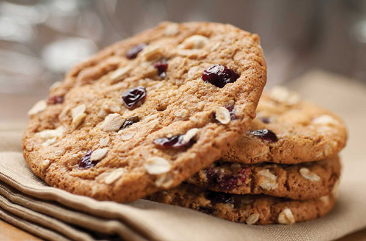
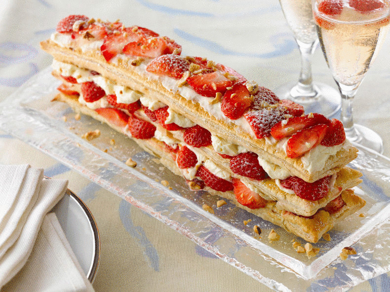

Не можна не помітити, що тістечка, що продаються в магазинах, по-перше, коштують недешево, по-друге, часто рясніють непотрібними добавками, зовсім не корисні для здоров’я. І це, безсумнівно, говорить не на користь таких покупних солодощів. При цьому далеко не кожна людина сьогодні знаходить час на щоденне приготування десертів, не кажучи вже про основні страви, от і виходить, що, незважаючи на все це, солодощі, які ми їмо, в основному, покупні. Але вихід завжди є для тих, хто шукає! У цій збірці ми зібрали кілька рецептів швидких тістечок, які цілком зможе приготувати будь-який бажаючий, який не має кондитерського досвіду. Читайте, беріть на замітку і пробуйте!
 Медові тістечка
Знадобиться:
4 яйця;
0,5 склянки борошна;
1/3 банки згущеного молока;
2 ст.л. меду;
1 ч.л. розпушувача;
волоський горіх;
чорнослив
Збити з медом яєчні жовтки, всипати перемішане з розпушувачем просіяне борошно, перемішати. Білки яєць збити до стійких піків, ввести в борошняну суміш і перемішати. Вилити тісто на деко (застелити його пергаментом і змастити маслом), запекти в розігрітій до 200 градусів духовці 5-7хв. Коли корж трохи охолоне, зняти папір, вирізати кружки або нарізати корж квадратиками або прямокутниками. Змастити тістечка згущеним молоком, прикрасити горіхами і чорносливом — можна зробити 2-3-ярусні тістечка. Якщо з коржа вирізалися кружки і залишилися обрізки, їх можна підрум’янити в духовці і прикрасити крихтою боки тістечок.Такі тістечка можна змащувати будь-яким кремом: замініть згущене молоко і горіхи йогуртовим кремом і фруктами.
Пісочні тістечка з фруктами.
Знадобиться:450г нектаринів чи персиків;
1,3 склянки вершків для збивання;
по 1 склянці натурального йогурту без добавок і пшеничного борошна;
0,5 склянки темного цільнозернового пшеничного борошна;
4 ст.л. цукру;
3 ст.л. меду;
2 ч.л. розпушувача;
1/4 ч.л. солі.
Розігріти духовку до 170 градусів, викласти на деко пергамент. Перемішати просіяне борошно з 3 ст.л. цукру, сіллю і розпушувачем, додати вершки, перемішуючи все виделкою до однорідності. Викласти тісто, що вийшло ложкою на деко у формі коржів, дотримуючись між ними відстань близько 7см, посипати цукром, запекти близько 18 хв до зарумянивания в духовці. Для соусу йогурт перемішати з медом, фрукти нарізати. Гарячі тістечка полити соусом, оформити фруктами і подати.© Lviv Polytechnic National University - Marta Liushniak